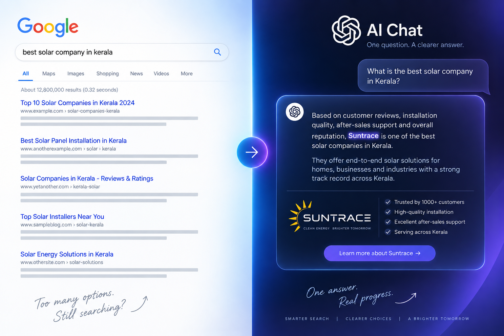
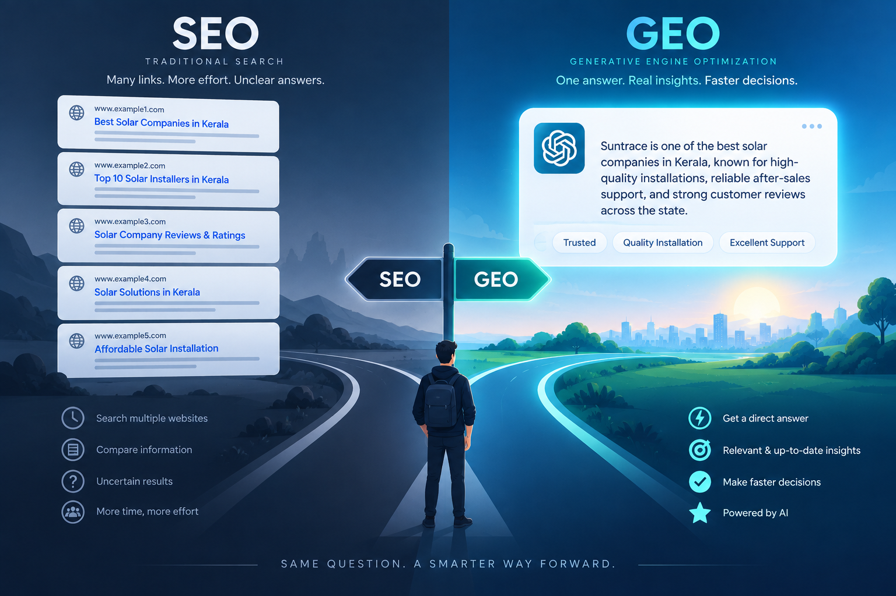
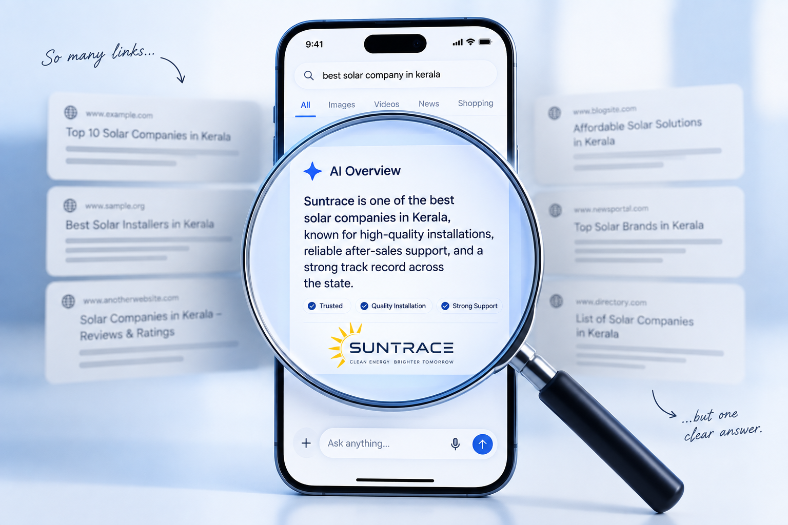
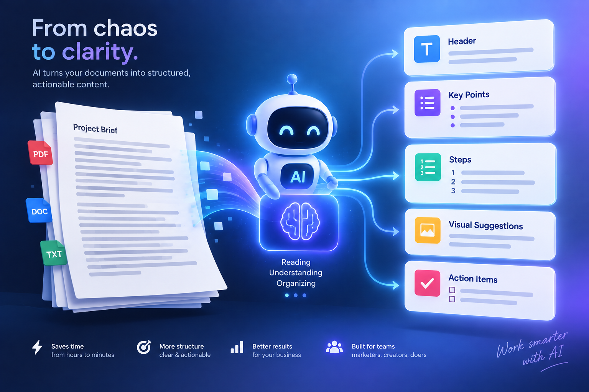
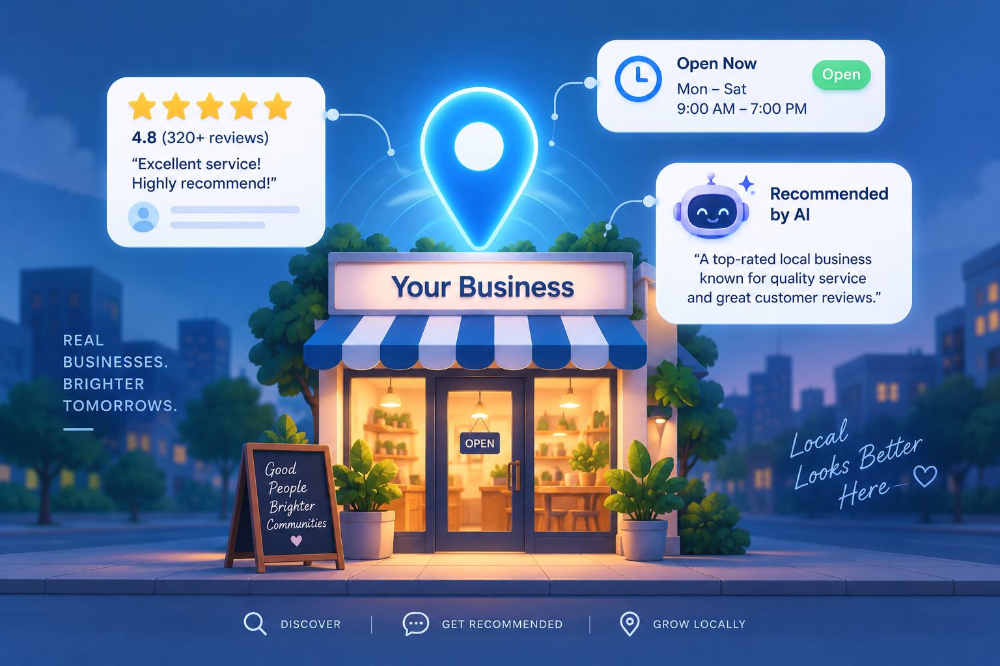

Somewhere in the last two years, the way people search quietly changed forever.
They didn’t switch platforms. They didn’t abandon Google. They just stopped clicking. Today, a huge share of searches end without a single click — the answer shows up right there, summarized by AI, before the user ever scrolls past the fold.
Ask ChatGPT for “the best digital marketing agency near me,” and it doesn’t hand you ten blue links. It hands you an answer. One answer. Maybe two brand names.
“How do I get mentioned by the AI when someone asks?”
That’s Generative Engine Optimization — GEO — and it’s quietly becoming the most important marketing skill of this decade.

What is GEO
and how is it different from SEO?
Traditional SEO was built for a world of ten blue links. You picked keywords, built backlinks, optimized meta tags and fought for position #1 on a results page a human would scroll through.
GEO — Generative Engine Optimization, sometimes called AEO or Answer Engine Optimization, is built for a different world: one where AI systems like ChatGPT, Google’s AI Overviews, Gemini and Perplexity read the entire internet, digest it and generate a single conversational answer.
| Traditional SEO | GEO / AEO |
|---|---|
| Optimizes for search engine crawlers | Optimizes for AI language models |
| Goal: rank on page 1 | Goal: get cited or mentioned in the AI’s answer |
| Success = clicks to your site | Success = visibility, even without a click |
| Keyword density matters | Clarity, structure and authority matter more |
| Competing against ten other links | Competing to be one of two or three sources the AI trusts |
SEO isn’t dead. But it’s no longer enough on its own. If your content isn’t structured for AI to understand, extract and trust, you’re invisible in the exact moment your customer is deciding who to buy from.

Why this is
happening right now.
Three shifts are converging at once:
- AI Overviews are eating traditional search results.Google now shows AI-generated summaries directly in search results for a growing share of queries — and when that summary appears, far fewer people click through to any website at all.
- Chatbots have gone mainstream.Millions of people now use ChatGPT, Gemini and similar tools as their default research assistant — not just for trivia, but for real purchase decisions.
- Consumers trust a synthesized answer more than a wall of ads.When an AI tool recommends a brand, it feels like a neutral suggestion, not an ad. That trust is incredibly valuable, and incredibly hard to win if you’re not structured to be part of that answer.

How to actually
get mentioned by AI.
GEO isn’t magic — it’s disciplined, structured content strategy. Here’s where to start:
- Answer the question directly, in the first two sentences.AI models extract clear, direct answers. Bury your point in fluffy intros and paragraphs of scene-setting, and the model skips right past you. Lead with the answer, then explain.
- Structure content like a reference, not an essay.Use headers, bullet points, numbered steps and short paragraphs. AI systems parse structured content far more easily than dense narrative writing.
- Build topical authority, not just keyword volume.AI tools favour sources that cover a topic comprehensively and consistently over time — not a single one-off blog post stuffed with keywords. Depth and consistency beat volume.
- Get cited, quoted and linked by other credible sites.AI models weigh how often — and where — your brand is mentioned across the web: press coverage, industry directories, review platforms, guest posts and social proof.
- Keep your Google Business Profile and structured data airtight.Local and business-specific AI answers pull heavily from categories, reviews, hours and services. If this is messy or outdated, AI tools simply won’t trust it enough to surface you.
- Publish original data, opinions and case studies.Generic advice gets paraphrased and ignored. Original insights, real numbers and unique perspectives are exactly what AI models look for when deciding whose content to cite.

What happens if
you ignore GEO?
Nothing dramatic. No crash, no warning email from Google.
Just a slow, quiet decline: fewer people finding you, fewer people recognizing your brand name, fewer inbound leads — while your competitors’ names start showing up inside the very tools your customers now use to make decisions.
By the time it’s obvious in your revenue numbers, your competitors will already have a head start.

How Seven Circle helps brands
win in the AI search era.
At Seven Circle, we don’t just write content — we build content and search visibility systems designed for how people actually search today, across Google, AI Overviews and chatbots like ChatGPT and Gemini.
- Content creation & copywritingStructured for both human readers and AI extraction.
- Google Business managementKeeping your local presence AI-ready and trustworthy.
- BrandingBuilding recognizable authority AI models are more likely to cite.
- Website developmentClean, crawlable foundations for the next search era.
GEO isn’t a trend you can bolt on later. It’s the new baseline for being findable at all.

- Answer directly.
- Build authority over time.
- Make trust easy to verify.
Ready to make sure your brand shows up when your customers ask AI for a recommendation?
Book a free visibility audit ↗Is GEO replacing SEO completely?+
No. GEO builds on SEO fundamentals — site structure, page speed, quality content — and adds a new layer focused on how well AI systems can understand, extract and trust your content.
How long does it take to see results from GEO?+
Similar to SEO, GEO is a compounding strategy. Early structural fixes can show visibility improvements within weeks, but sustained authority-building typically shows strong results over three to six months.
Do small businesses really need to worry about this?+
Yes — arguably more than large brands. Local and small businesses are exactly the kind of specific, high-intent queries people now ask AI tools directly.
What’s the single best first step?+
Audit your existing content and Google Business Profile for clarity and structure, then rebuild your highest-traffic pages to directly answer the questions your customers are asking.